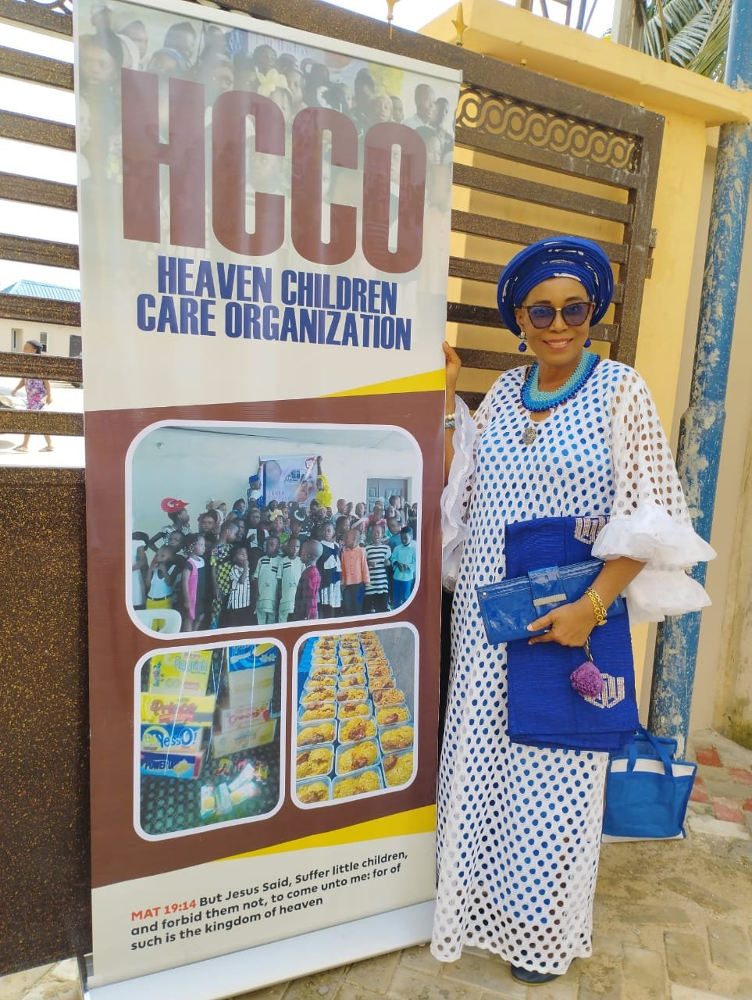

Heaven Children Care Organization (HCCO) exists to nourish, support, and empower vulnerable children and families — through food assistance, education, care, and community partnerships.
HCCO began with a simple conviction: that every child deserves to be nourished, cared for, and given a real chance to thrive. What started as a faith-led response to need in our community has grown into an organization dedicated to walking alongside vulnerable children and families for the long term.
We work hand-in-hand with churches, community partners, and volunteers to reach children where they are — with practical support and consistent care.
Our Story
Meals and nutritional support for children and families facing food insecurity.
Support for learning and healthy childhood development.
Holistic care for the wellbeing of the children and families we serve.
Working together with churches and local communities to extend our reach.
Figures as of September 2026. See Our Impact for more.
"Your dedication to seeing our children grow in faith is a tremendous blessing to this Ministry. We pray that the Lord continues to bless you abundantly and multiply the seed you have sown into His Kingdom."
— Apostle David Majasan, Immortal Life Apostolic Centre